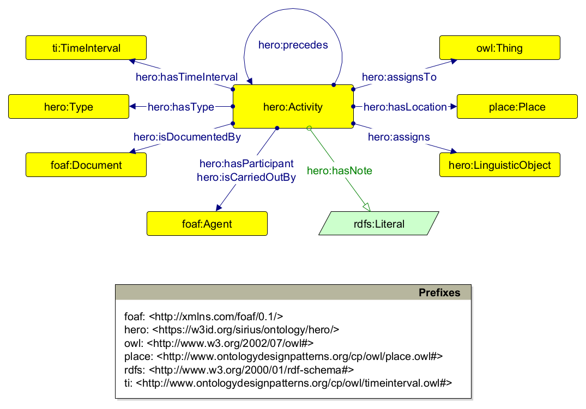

The Heritage Risk Assessment Ontology (HeRO, https://w3id.org/sirius/ontology/hero) is a OWL 2 DL ontology for describing risk assessment activities in the cultural and environmental heritage domain in a machine-actionable format. It was developed by using a slightly modified version of the Simplified Agile Methodology for Ontology Development (SAMOD).
Both HeRO and its documentation are living artefacts that have been and still are being drafted in the context of the Project CHANGES ("Cultural Heritage Active Innovation For Next-Gen Sustainable Society"), an EU-funded project that aims at increasing, in the Italian context, the curation, and management of cultural heritage artefacts in all forms, expanding the involvement of the general public, making the exhibition potential more sustainable, and including crucial social functions (accessibility, inclusiveness, critical thinking, participation, enjoyment, sustainability) into the cultural heritage environment.
Currently, HeRO is able to describe the following entities:
The current version of HeRO reuses a series of Ontology Design Patterns (ODPs) by defining its own set of classes and properties and conceptualizing them as subclasses and subproperties of the reused ODPs' entities. More specifically, HeRO reuses the following models:
A full version of HeRO is available at https://w3id.org/sirius/ontology/hero.
The next subsections provide a quick overview of all the entities defined, some exemple of usage, and some of the queries that HeRO can answer.
In HeRO, the concept of assessment activity represents the core abstraction around which the rest of the ontology is built. As shown in the following diagram, an assessment activity is a first-class object related to a series of other entities that populate and signify its context.

As previously mentioned, HeRO draws constructs from ODPs and uses them as super classes and super properties of its own entities to accurately represent the processes outlined by a risk assessment endeavor, as well as the concepts and relations implicitly expressed in such processes. In particular, an assessment activity (hero:Activity) is a situated action that involves gaining and producing scientific knowledge about some entity being observed by assigning to that entity a series of assertions referring to concepts used to make the assessment. As a result, it has been modelled as a subclass of tisit:TimeIndexedSituation and planex:Action that assigns to a object (owl:Thing) a series of "linguistic objects" (hero:LinguisticObject) representing scientific observations, statements or assertions related to that object. Multiple activities can be sequentialized one after the other with hero:precedes. In addition, an assessment activity is enriched with a packet of additional information covering its type (hero:Type), its temporal horizon (ti:TimeInterval), its geographic context (place:Place), the agents involved in its realization (foaf:Agent), the material documenting how the activity was carried out and based on what sources (foaf:Document), and its textual description (hero:hasNote).
As illustrated in the previous section, an assessment activity assigns a series of assertions to the objects being examined. As shown in the following diagram, an assertion (hero:LinguisticObject) is modelled as a subclass of hero:InformationObject, thus incorporating the idea of an assertion as a piece of information, independently from how it is concretely realized. In turn, an assertion refers to some qualitative, quantitative or interpretative conceptual object (hero:InformationObject), modelled as a subclass of intensionextension:InformationObject, that carries some information that is deemed relevant in the context of risk assessment.
In addition to referring to some concept, an assertion can be classified according to external categorization schemes (hero:Type), can be documented by some document (foaf:Document), can be also motivated by other concepts referred to in other assertions, and expresses some kind of content or value (hero:hasContent). A concept, while also being characterized by a type (hero:Type) and a content (hero:hasContent), can be composed of other conceptual objects (hero:hasComponent).
HeRO can be used for modelling scenarios related to heritage risk assessment. Note that, due to the wide scope of the classes and properties it uses, the way it has been modelled, and its dependency on external vocabularies for typification, HeRO can be used to model any situation involving assigning scientific assertions expressing some kind of conceptual content to an object in order to examine it.
In the following subsections we introduce some scenarios pertaining to the cultural heritage risk domain, and we accompany them with exemplar instantiations.
The prefixes that are used in all the examples provided below are defined as follows:
@prefix : <https://w3id.org/sirius/ontology/hero/data/example/> .
@prefix aat: <http://vocab.getty.edu/page/aat/> .
@prefix foaf: <http://xmlns.com/foaf/0.1/> .
@prefix freq: <http://publications.europa.eu/resource/authority/frequency/> .
@prefix hero: <https://w3id.org/sirius/ontology/hero/> .
@prefix owl: <http://www.w3.org/2002/07/owl#> .
@prefix place: <http://www.ontologydesignpatterns.org/cp/owl/place.owl#> .
@prefix rdfs: <http://www.w3.org/2000/01/rdf-schema#> .
@prefix ti: <http://www.ontologydesignpatterns.org/cp/owl/timeinterval.owl#> .
@prefix wd: <http://www.wikidata.org/entity/> .
An assessment activity :assessment-activity-01 consisting in the context description of a CHO :baptistery, is taking place in Ravenna, is being carried out by the expert Sara Fiorentino (with the involvement of other stakeholders, such as Comune di Ravenna, Soprintendenza di Ravenna and Università di Bologna), in the time interval starting from 2024-02-01 to 2024-03-01, and is being annotated with the following text: "Octagonal building with sloping roof, featuring four apsidioles corresponding to the cardinal points (partially buried). The mosaic decoration is preserved only on the dome, creating a striking contrast with the rough surface of exposed bricks in the lower part. The mosaic depicts in the center the baptism of Christ in the River Jordan, surrounded by a band with the twelve apostles parading in two rows, meeting at the throne of the etimasia, symbol of the invisible presence of Christ."
It is composed of six statements, each assigned to the CHO in question:
:observation-01, which is a descriptive statement referring to the physical properties of the CHO (:concept-01) with the following content: "The Baptistery is externally visible on the N, NW, and NE sides. The west side overlooks the gardens of a private residence, while the south, SW, and SE sides overlook the garden of the Department of Cultural Heritage (University of Bologna).":observation-02, which is a descriptive statement referring to the social environment surrounding the CHO (:concept-02) with the following content: "Monumental site in an urban area, open to tourists (with prior admission ticket). The small square where the building is located suffers from a bad reputation, being labeled as a 'socially risky area and a neglected place' (reported incident of an abandoned bed frame found at night in the Baptistery's trench, 11.07.2006, Source: Zaccarini, 2015). Despite the establishment of regulations in 2012 restricting vehicle access to the square, transit and parking for loading/unloading goods are still permitted.":observation-03, which is a descriptive statement referring to the political environment surrounding the CHO (:concept-03) with the following content: "The monument is often a subject of debate among various political parties and the Municipality of Ravenna.". It is documented by :document-01:observation-04, which is a descriptive statement referring to the legal status of the CHO (:concept-04) with the following content: "Owned by the State Property / Ministry of Culture. Since 1996, it has been part of the UNESCO World Heritage Sites list in Italy ('Early Christian Monuments of Ravenna').":observation-05, which is a descriptive statement referring to the administration of the CHO (:concept-05) with the following content: "Since December 2019, it has been managed by the Regional Directorate of Museums of Emilia Romagna, located in Ravenna.":observation-06, which is a descriptive statement referring to the economic environment surrounding the CHO (:concept-06) with the following content: "The Law No. 77 of February 20, 2006, establishes that UNESCO sites are excellences of the Italian cultural, landscape, and natural heritage, fundamental elements of our country's representation at the international level, and states that interventions on them have priority even in terms of the allocation of financial resources.":assessment-activity-01 a hero:Activity ;
hero:assigns :observation-01 ,
:observation-02 ,
:observation-03 ,
:observation-04 ,
:observation-05 ,
:observation-06 ;
hero:assignsTo :baptistery ;
hero:hasLocation :ravenna ;
hero:hasNote '''Octagonal building with sloping roof, featuring four apsidioles corresponding
to the cardinal points (partially buried). The mosaic decoration is preserved only on the
dome, creating a striking contrast with the rough surface of exposed bricks in the lower
part. The mosaic depicts in the center the baptism of Christ in the River Jordan,
surrounded by a band with the twelve apostles parading in two rows, meeting at the throne
of the etimasia, symbol of the invisible presence of Christ.'''@en ;
hero:hasParticipant :comune-di-ravenna ,
:sara-fiorentino ,
:soprintendenza-di-ravenna ,
:universita-di-bologna ;
hero:hasTimeInterval :time-interval-01 ;
hero:hasType wd:Q1137655 ;
hero:isCarriedOutBy :sara-fiorentino .
:concept-01 a hero:InformationObject ;
hero:hasType wd:Q4373292 .
:concept-02 a hero:InformationObject ;
hero:hasType wd:Q8425 .
:concept-03 a hero:InformationObject ;
hero:hasType wd:Q7163 .
:concept-04 a hero:InformationObject ;
hero:hasType wd:Q2628882 .
:concept-05 a hero:InformationObject ;
hero:hasType wd:Q5283295 .
:concept-06 a hero:InformationObject ;
hero:hasType wd:Q8134 .
:document-01 a foaf:Document .
:observation-01 a hero:LinguisticObject ;
hero:hasContent '''The Baptistery is externally visible on the N, NW, and NE sides. The west
side overlooks the gardens of a private residence, while the south, SW, and SE sides
overlook the garden of the Department of Cultural Heritage (University of Bologna).'''@en ;
hero:hasType aat:300435416 ;
hero:refersTo :concept-01 .
:observation-02 a hero:LinguisticObject ;
hero:hasContent '''Monumental site in an urban area, open to tourists (with prior admission
ticket). The small square where the building is located suffers from a bad reputation, being
labeled as a 'socially risky area and a neglected place' (reported incident of an abandoned
bed frame found at night in the Baptistery's trench, 11.07.2006, Source: Zaccarini, 2015).
Despite the establishment of regulations in 2012 restricting vehicle access to the square,
transit and parking for loading/unloading goods are still permitted.'''@en ;
hero:hasType aat:300435416 ;
hero:refersTo :concept-02 .
:observation-03 a hero:LinguisticObject ;
hero:hasContent '''The monument is often a subject of debate among various political parties
and the Municipality of Ravenna.'''@en ;
hero:hasType aat:300435416 ;
hero:isDocumentedBy :document-01 ;
hero:refersTo :concept-03 .
:observation-04 a hero:LinguisticObject ;
hero:hasContent '''Owned by the State Property / Ministry of Culture. Since 1996, it has been
part of the UNESCO World Heritage Sites list in Italy ('Early Christian Monuments of
Ravenna').'''@en ;
hero:hasType aat:300435416 ;
hero:refersTo :concept-04 .
:observation-05 a hero:LinguisticObject ;
hero:hasContent '''Since December 2019, it has been managed by the Regional Directorate of
Museums of Emilia Romagna, located in Ravenna.'''@en ;
hero:hasType aat:300435416 ;
hero:refersTo :concept-05 .
:observation-06 a hero:LinguisticObject ;
hero:hasContent '''The Law No. 77 of February 20, 2006, establishes that UNESCO sites are
excellences of the Italian cultural, landscape, and natural heritage, fundamental elements
of our country's representation at the international level, and states that interventions on
them have priority even in terms of the allocation of financial resources.'''@en ;
hero:hasType aat:300435416 ;
hero:refersTo :concept-06 .
:time-interval-01 a ti:TimeInterval ;
ti:hasIntervalEndDate "2024-03-01T23:59:59Z"^^xsd:dateTime ;
ti:hasIntervalStartDate "2024-02-01T00:00:00Z"^^xsd:dateTime .
:baptistery a owl:Thing .
:ravenna a place:Place .
:sara-fiorentino a foaf:Agent .
:soprintendenza-di-ravenna a foaf:Agent .
:universita-di-bologna a foaf:Agent .
Two assessment activities consisting in the identification of risks related to the CHO :baptistery, are taking place in Ravenna and are being carried out by the expert Sara Fiorentino, in the time interval starting from 2024-03-01 to 2024-04-01. They are:
assessment-activity-03, annotated with the text "Floods and heavy rains induce erosion of the baptistery walls". It is composed of three statements assigned to the CHO:
:observation-10, which is a condition description referring to the potential damage of water-related hazards (:concept-10);:observation-11, which is a dimensions description referring to the annual occurrence of the potential hazardous event (:concept-11);:observation-12, which is a location description referring to the region surrounding the CHO as the location of occurrence of the potential hazardous event (:concept-12).assessment-activity-04, which is composed of three statements assigned to the CHO:
:observation-13, which is a condition description referring to the potential damage of fire-related hazards (:concept-13);:observation-14, which is a dimensions description referring to the centennial occurrence of the potential hazardous event (:concept-14);:observation-15, which is a location description referring to the building in which the CHO is situated as the location of occurrence of the potential hazardous event (:concept-15).:assessment-activity-03 a hero:Activity ;
hero:assigns :observation-10 ,
:observation-11 ,
:observation-12 ;
hero:assignsTo :baptistery ;
hero:hasLocation :ravenna ;
hero:hasNote "Floods and heavy rains induce erosion of the baptistery walls."@en ;
hero:hasTimeInterval :time-interval-02 ;
hero:hasType wd:Q5687675 ;
hero:isCarriedOutBy :sara-fiorentino .
:assessment-activity-04 a hero:Activity ;
hero:assigns :observation-13 ,
:observation-14 ,
:observation-15 ;
hero:assignsTo :baptistery ;
hero:hasLocation :ravenna ;
hero:hasTimeInterval :time-interval-02 ;
hero:hasType wd:Q5687675 ;
hero:isCarriedOutBy :sara-fiorentino .
:concept-10 a hero:InformationObject ;
hero:hasType wd:Q19289049 .
:concept-11 a hero:InformationObject ;
hero:hasType freq:ANNUAL .
:concept-12 a hero:InformationObject ;
hero:hasType wd:Q82794 .
:concept-13 a hero:InformationObject ;
hero:hasType wd:Q56497979 .
:concept-14 a hero:InformationObject ;
hero:hasType freq:OTHER .
:concept-15 a hero:InformationObject ;
hero:hasType wd:Q41176 .
:observation-10 a hero:LinguisticObject ;
hero:hasType aat:300435425 ;
hero:refersTo :concept-10 .
:observation-11 a hero:LinguisticObject ;
hero:hasType aat:300435430 ;
hero:refersTo :concept-11 .
:observation-12 a hero:LinguisticObject ;
hero:hasType aat:300435449 ;
hero:refersTo :concept-12 .
:observation-13 a hero:LinguisticObject ;
hero:hasType aat:300435425 ;
hero:refersTo :concept-13 .
:observation-14 a hero:LinguisticObject ;
hero:hasType aat:300435430 ;
hero:refersTo :concept-14 .
:observation-15 a hero:LinguisticObject ;
hero:hasType aat:300435449 ;
hero:refersTo :concept-15 .
:time-interval-02 a ti:TimeInterval ;
ti:hasIntervalEndDate "2024-04-01T23:59:59Z"^^xsd:dateTime ;
ti:hasIntervalStartDate "2024-03-01T00:00:00Z"^^xsd:dateTime .
:baptistery a owl:Thing .
:ravenna a place:Place .
:sara-fiorentino a foaf:Agent .
An assessment activity :assessment-activity-05, consisting in the analysis of risks related to a CHO :baptistery, is taking place in Ravenna, is documented in the document :document-03 and is being carried out by the expert Sara Fiorentino, in the time interval starting from 2024-04-01 to 2024-05-01, continuing :assessment-activity-03. It is annotated with the following text: "A flood event is expected in the baptistery approximately once every 25 years, most likely affecting the whole heritage asset value per event, resulting in a partial loss." It is composed of four statements, each assigned to the CHO in question:
:observation-16, which is a dimensions description referring to the frequency of the risk occurrence (:concept-16). In turn, the frequency is composed of three other concepts::concept-16a), with a value of "3.0";:concept-16b), with a value of "3.5";:concept-16c), with a value of "4.0".:observation-17, which is a dimensions description referring to the fractional value loss determined by the risk occurrence (:concept-17). In turn, the fractional value loss is composed of three other concepts::concept-17a), with a value of "4.5";:concept-17b), with a value of "5.0";:concept-17c), with a value of "5.0".:observation-18, , which is a dimensions description referring to the exposure determined by the risk occurrence (:concept-18). In turn, the exposure is composed of three other concepts::concept-18a), with a value of "1.5";:concept-18b), with a value of "2.0";:concept-18c), with a value of "2.5".:observation-19, , which is a dimensions description referring to the magnitude of the risk occurrence (:concept-19). In turn, the magnitude is composed of three other concepts::concept-19a), with a value of "9.0";:concept-19b), with a value of "10.5";:concept-19c), with a value of "11.5".Another assessment activity :assessment-activity-06, consisting in the analysis of risks related to :baptistery, is taking place in Ravenna, is documented in the document :document-03 and is being carried out by the expert Sara Fiorentino, in the time interval starting from 2024-04-01 to 2024-05-01, continuing :assessment-activity-04. It is annotated with the following text: "A large fire event is expected in the museum approximately once every 300 years, with the fire affecting all or most of the heritage asset value, causing total or almost total loss of value in each affected item." It consists of four statements:
:observation-20, which is a dimensions description referring to the frequency of the risk occurrence (:concept-20). In turn, the frequency is composed of three other concepts::concept-20a), with a value of "2.0";:concept-20b), with a value of "2.5";:concept-20c), with a value of "3.0".:observation-21, which is a dimensions description referring to the fractional value loss determined by the risk occurrence (:concept-21). In turn, the fractional value loss is composed of three other concepts::concept-21a), with a value of "4.5";:concept-21b), with a value of "5.0";:concept-21c), with a value of "5.0".:observation-22, which is a dimensions description referring to the exposure determined by the risk occurrence (:concept-22). In turn, the exposure is composed of three other concepts::concept-22a), with a value of "4.5";:concept-22b), with a value of "5.0";:concept-22c), with a value of "5.0".:observation-23, which is a dimensions description referring to the magnitude of the risk occurrence (:concept-23). In turn, the magnitude is composed of three other concepts::concept-23a), with a value of "11.0";:concept-23b), with a value of "12.5";:concept-23c), with a value of "13.0".:assessment-activity-05 a hero:Activity ;
hero:assigns :observation-16 ,
:observation-17 ,
:observation-18 ,
:observation-19 ;
hero:assignsTo :baptistery ;
hero:hasLocation :ravenna ;
hero:hasNote '''A flood event is expected in the baptistery approximately once every 25
years, most likely affecting the whole heritage asset value per event, resulting in a partial loss.'''@en ;
hero:hasTimeInterval :time-interval-03 ;
hero:hasType wd:Q217602 ;
hero:isCarriedOutBy :sara-fiorentino ;
hero:isDocumentedBy :document-03 ;
hero:precedes :assessment-activity-03 .
:document-03 a foaf:Document .
:assessment-activity-06 a hero:Activity ;
hero:assigns :observation-20 ,
:observation-21 ,
:observation-22 ,
:observation-23 ;
hero:assignsTo :baptistery ;
hero:hasLocation :ravenna ;
hero:hasNote '''A large fire event is expected in the museum approximately once every 300
years, with the fire affecting all or most of the heritage asset value, causing total or
almost total loss of value in each affected item.'''@en ;
hero:hasTimeInterval :time-interval-03 ;
hero:hasType wd:Q217602 ;
hero:isCarriedOutBy :sara-fiorentino ;
hero:isDocumentedBy :document-03 ;
hero:precedes :assessment-activity-04 .
:concept-16 a hero:InformationObject ;
hero:hasComponent :concept-16a ,
:concept-16b ,
:concept-16c ;
hero:hasType wd:Q11652 .
:concept-16a a hero:InformationObject ;
hero:hasContent "3.0"^^rdfs:Literal ;
hero:hasType wd:Q10585806 .
:concept-16b a hero:InformationObject ;
hero:hasContent "3.5"^^rdfs:Literal ;
hero:hasType wd:Q226995 .
:concept-16c a hero:InformationObject ;
hero:hasContent "4.0"^^rdfs:Literal ;
hero:hasType wd:Q10578722 .
:concept-17 a hero:InformationObject ;
hero:hasComponent :concept-17a ,
:concept-17b ,
:concept-17c ;
hero:hasType wd:Q7523953 .
:concept-17a a hero:InformationObject ;
hero:hasContent "4.5"^^rdfs:Literal ;
hero:hasType wd:Q10585806 .
:concept-17b a hero:InformationObject ;
hero:hasContent "5.0"^^rdfs:Literal ;
hero:hasType wd:Q226995 .
:concept-17c a hero:InformationObject ;
hero:hasContent "5.0"^^rdfs:Literal ;
hero:hasType wd:Q10578722 .
:concept-18 a hero:InformationObject ;
hero:hasComponent :concept-18a ,
:concept-18b ,
:concept-18c ;
hero:hasType wd:Q107642367 .
:concept-18a a hero:InformationObject ;
hero:hasContent "1.5"^^rdfs:Literal ;
hero:hasType wd:Q10585806 .
:concept-18b a hero:InformationObject ;
hero:hasContent "2.0"^^rdfs:Literal ;
hero:hasType wd:Q226995 .
:concept-18c a hero:InformationObject ;
hero:hasContent "2.5"^^rdfs:Literal ;
hero:hasType wd:Q10578722 .
:concept-19 a hero:InformationObject ;
hero:hasComponent :concept-19a ,
:concept-19b ,
:concept-19c ;
hero:hasType wd:Q2154759 .
:concept-23 a hero:InformationObject ;
hero:hasComponent :concept-23a ,
:concept-23b ,
:concept-23c ;
hero:hasType wd:Q2154759 .
:concept-19a a hero:InformationObject ;
hero:hasContent "9.0"^^rdfs:Literal ;
hero:hasType wd:Q10585806 .
:concept-19b a hero:InformationObject ;
hero:hasContent "10.5"^^rdfs:Literal ;
hero:hasType wd:Q226995 .
:concept-19c a hero:InformationObject ;
hero:hasContent "11.5"^^rdfs:Literal ;
hero:hasType wd:Q10578722 .
:concept-20 a hero:InformationObject ;
hero:hasComponent :concept-20a ,
:concept-20b ,
:concept-20c ;
hero:hasType wd:Q11652 .
:concept-20a a hero:InformationObject ;
hero:hasContent "2.0"^^rdfs:Literal ;
hero:hasType wd:Q10585806 .
:concept-20b a hero:InformationObject ;
hero:hasContent "2.5"^^rdfs:Literal ;
hero:hasType wd:Q226995 .
:concept-20c a hero:InformationObject ;
hero:hasContent "3.0"^^rdfs:Literal ;
hero:hasType wd:Q10578722 .
:concept-21 a hero:InformationObject ;
hero:hasComponent :concept-21a ,
:concept-21b ,
:concept-21c ;
hero:hasType wd:Q7523953 .
:concept-21a a hero:InformationObject ;
hero:hasContent "4.5"^^rdfs:Literal ;
hero:hasType wd:Q10585806 .
:concept-21b a hero:InformationObject ;
hero:hasContent "5.0"^^rdfs:Literal ;
hero:hasType wd:Q226995 .
:concept-21c a hero:InformationObject ;
hero:hasContent "5.0"^^rdfs:Literal ;
hero:hasType wd:Q10578722 .
:concept-22 a hero:InformationObject ;
hero:hasComponent :concept-22a ,
:concept-22b ,
:concept-22c ;
hero:hasType wd:Q107642367 .
:concept-22a a hero:InformationObject ;
hero:hasContent "4.5"^^rdfs:Literal ;
hero:hasType wd:Q10585806 .
:concept-22b a hero:InformationObject ;
hero:hasContent "5.0"^^rdfs:Literal ;
hero:hasType wd:Q226995 .
:concept-22c a hero:InformationObject ;
hero:hasContent "5.0"^^rdfs:Literal ;
hero:hasType wd:Q10578722 .
:concept-23a a hero:InformationObject ;
hero:hasContent "11.0"^^rdfs:Literal ;
hero:hasType wd:Q10585806 .
:concept-23b a hero:InformationObject ;
hero:hasContent "12.5"^^rdfs:Literal ;
hero:hasType wd:Q226995 .
:concept-23c a hero:InformationObject ;
hero:hasContent "13.0"^^rdfs:Literal ;
hero:hasType wd:Q10578722 .
:time-interval-03 a ti:TimeInterval ;
ti:hasIntervalEndDate "2024-05-01T23:59:59Z"^^xsd:dateTime ;
ti:hasIntervalStartDate "2024-04-01T00:00:00Z"^^xsd:dateTime .
:baptistery a owl:Thing .
:ravenna a place:Place .
:sara-fiorentino a foaf:Agent .
An assessment activity :assessment-activity-07 consisting in the evaluation of risks related to a CHO :baptistery, is taking place in Ravenna and is being carried out by the expert Sara Fiorentino, in the time interval starting from 2024-05-01 to 2024-06-01, continuing :assessment-activity-05. It is annotated with the following text: "The risk of flood (MR = 10.5) has a high priority. It is 100 times smaller than the fire risk. The uncertainty that has been measured amounts to a value equal to 2.5. A risk of this magnitude is equivalent to losing about 0.3% of the heritage asset value every 100 years (or 3% per millennium). The museum direction considers this level of risk as just beyond acceptable, since as a condition the value of MR is slightly higher than 10 and the value of uncertainty is higher than 2." It consists of one statement assigned to the CHO in question:
:observation-24, which is a diagnosis motivated by :parameter-19 and referring to a high level of priority(:concept-24).Another assessment activity :assessment-activity-08 consisting in the evaluation of risks related to the CHO :baptistery is taking place in Ravenna and is being carried out by the expert Sara Fiorentino, in the time interval starting from 2024-05-01 to 2024-06-01, following :assessment-activity-06. It is annotated with the following text: "The risk of a large fire affecting the baptistery and its contents (MR = 12.5) has an extreme priority. The uncertainty that has been measured amounts to a value equal to 1.0. A risk of this magnitude is equivalent to losing about 3% of the heritage asset value every 10 years (or 30% per century, or 100% in about 300 years). The museum direction considers this level of risk as ‘not acceptable’, since as a condition the value of MR is higher than 10 and the value of uncertainty is lower than 2." It consists of one statement assigned to the CHO in question:
:observation-26, which is a diagnosis motivated by :parameter-23 and referring to a extreme level of priority (:concept-26).:assessment-activity-07 a hero:Activity ;
hero:assigns :observation-24 ;
hero:assignsTo :baptistery ;
hero:hasLocation :ravenna ;
hero:hasNote '''The risk of flood (MR = 10.5) has a high priority. It is 100 times smaller
than the fire risk. The uncertainty that has been measured amounts to a value equal to 2.5.
A risk of this magnitude is equivalent to losing about 0.3% of the heritage asset value
every 100 years (or 3% per millennium). The museum direction considers this level of risk as
just beyond acceptable, since as a condition the value of MR is slightly higher than 10 and
the value of uncertainty is higher than 2.'''@en ;
hero:hasTimeInterval :time-interval-04 ;
hero:hasType wd:Q1379672 ;
hero:isCarriedOutBy :sara-fiorentino ;
hero:precedes :assessment-activity-05 .
:assessment-activity-08 a hero:Activity ;
hero:assigns :observation-26 ;
hero:assignsTo :baptistery ;
hero:hasLocation :ravenna ;
hero:hasNote '''The risk of a large fire affecting the baptistery and its contents (MR = 12.5)
has an extreme priority. The uncertainty that has been measured amounts to a value equal to
1.0. A risk of this magnitude is equivalent to losing about 3% of the heritage asset value
every 10 years (or 30% per century, or 100% in about 300 years). The museum direction
considers this level of risk as ‘not acceptable’, since as a condition the value of MR is
higher than 10 and the value of uncertainty is lower than 2.'''@en ;
hero:hasTimeInterval :time-interval-04 ;
hero:hasType wd:Q1379672 ;
hero:isCarriedOutBy :sara-fiorentino ;
hero:precedes :assessment-activity-06 .
:concept-24 a hero:InformationObject ;
hero:hasType wd:Q125584111 .
:concept-26 a hero:InformationObject ;
hero:hasType wd:Q2154759 .
:observation-24 a hero:LinguisticObject ;
hero:hasType aat:300438433 ;
hero:isMotivatedBy :concept-19 ;
hero:refersTo :concept-24 .
:observation-26 a hero:LinguisticObject ;
hero:hasType aat:300438433 ;
hero:isMotivatedBy :concept-23 ;
hero:refersTo :concept-26 .
:time-interval-04 a ti:TimeInterval ;
ti:hasIntervalEndDate "2024-06-01T23:59:59Z"^^xsd:dateTime ;
ti:hasIntervalStartDate "2024-05-01T00:00:00Z"^^xsd:dateTime .
:baptistery a owl:Thing .
:ravenna a place:Place .
:sara-fiorentino a foaf:Agent .
An assessment activity :assessment-activity-09 consisting in the treatment of risks related to a CHO :baptistery, is taking place in Ravenna and is being carried out by the expert Sara Fiorentino, in the time interval starting from 2024-06-01 to 2024-07-01, following :assessment-activity-07. It is annotated with the following text: "One possible action to protect a baptistery from water damage could be to install a waterproof membrane or coating on the exterior surfaces. This would help prevent water infiltration and damage to the structure. Additionally, regular maintenance such as inspecting for cracks or leaks and repairing them promptly can help mitigate water damage over time". It consists of three statements, each assigned to the CHO in question:
:observation-29, which is a plan description referring to a blocking action to try managing the described risks (:concept-29);:observation-30, which is a budget description referring to a capital cost (:concept-30) to implement such action, amounting to "3200" euros.:observation-31, which is a budget description referring to a maintenance cost (:concept-31) to implement such action, amounting to "120" euros.Another assessment activity :assessment-activity-10 consisting in the treatment of risks related to a heritage asset :baptistery, is taking place in Ravenna and is being carried out by the expert Sara Fiorentino, in the time interval starting from 2024-06-01 to 2024-07-01, following :assessment-activity-07. It is annotated with the following text: "Use fire-resistant materials: Consider using fire-resistant coatings, fire-rated doors, and fireproof insulation to minimize fire damage." It consists of three statements, each assigned to the CHO in question:
:observation-32, which is a plan description referring to a blocking action to try managing the described risks (:concept-32);:observation-33, which is a budget description referring to a capital cost (:concept-33) amounting to "5000" euros;:observation-34, which is a budget description referring to a maintenance cost (:concept-34), amounting to "375" euros per month.:assessment-activity-09 a hero:Activity ;
hero:assigns :observation-29 ,
:observation-30 ,
:observation-31 ;
hero:assignsTo :baptistery ;
hero:hasLocation :ravenna ;
hero:hasNote '''One possible action to protect a baptistery from water damage could be to
install a waterproof membrane or coating on the exterior surfaces. This would help prevent
water infiltration and damage to the structure. Additionally, regular maintenance such as
inspecting for cracks or leaks and repairing them promptly can help mitigate water damage
over time.'''@en ;
hero:hasTimeInterval :time-interval-05 ;
hero:hasType wd:Q2251595 ;
hero:isCarriedOutBy :sara-fiorentino ;
hero:precedes :assessment-activity-07 .
:assessment-activity-10 a hero:Activity ;
hero:assigns :observation-32 ,
:observation-33 ,
:observation-34 ;
hero:assignsTo :baptistery ;
hero:hasLocation :ravenna ;
hero:hasNote '''Use fire-resistant materials: Consider using fire-resistant coatings,
fire-rated doors, and fireproof insulation to minimize fire damage.'''@en ;
hero:hasTimeInterval :time-interval-05 ;
hero:hasType wd:Q2251595 ;
hero:isCarriedOutBy :sara-fiorentino ;
hero:precedes :assessment-activity-08 .
:concept-29 a hero:InformationObject ;
hero:hasType wd:Q2956685 .
:concept-30 a hero:InformationObject ;
hero:hasContent "3200"^^rdfs:Literal ;
hero:hasType wd:Q302208 .
:concept-31 a hero:InformationObject ;
hero:hasContent "120"^^rdfs:Literal ;
hero:hasType wd:Q831940 .
:concept-32 a hero:InformationObject ;
hero:hasType wd:Q2956685 .
:concept-33 a hero:InformationObject ;
hero:hasContent "5000"^^rdfs:Literal ;
hero:hasType wd:Q302208 .
:concept-34 a hero:InformationObject ;
hero:hasContent "375"^^rdfs:Literal ;
hero:hasType wd:Q831940 .
:observation-24 a hero:LinguisticObject ;
hero:hasType aat:300438433 ;
hero:isMotivatedBy :concept-19 ;
hero:refersTo :concept-24 .
:observation-26 a hero:LinguisticObject ;
hero:hasType aat:300438433 ;
hero:isMotivatedBy :concept-23 ;
hero:refersTo :concept-26 .
:observation-29 a hero:LinguisticObject ;
hero:hasType wd:Q1371819 ;
hero:refersTo :concept-29 .
:observation-30 a hero:LinguisticObject ;
hero:hasType aat:300027514 ;
hero:refersTo :concept-30 .
:observation-31 a hero:LinguisticObject ;
hero:hasType aat:300027514 ;
hero:refersTo :concept-31 .
:observation-32 a hero:LinguisticObject ;
hero:hasType wd:Q1371819 ;
hero:refersTo :concept-32 .
:observation-33 a hero:LinguisticObject ;
hero:hasType aat:300027514 ;
hero:refersTo :concept-33 .
:observation-34 a hero:LinguisticObject ;
hero:hasType aat:300027514 ;
hero:refersTo :concept-34 .
:time-interval-05 a ti:TimeInterval ;
ti:hasIntervalEndDate "2024-07-01T23:59:59Z"^^xsd:dateTime ;
ti:hasIntervalStartDate "2024-06-01T00:00:00Z"^^xsd:dateTime .
:baptistery a owl:Thing .
:ravenna a place:Place .
:sara-fiorentino a foaf:Agent .
HeRO can be used for answering several questions related to risk assessment activities in the cultural and environmental heirtage domains. In the following subsections, we introduce some of them, and we accompany them with exemplar SPARQL queries.
The prefixes that are used in all the SPARQL queries provided below are defined as follows:
PREFIX : <https://w3id.org/sirius/ontology/hero/data/example/>
PREFIX aat: <http://vocab.getty.edu/page/aat/>
PREFIX hero: <https://w3id.org/sirius/ontology/hero/>
PREFIX owl: <http://www.w3.org/2002/07/owl#>
PREFIX rdfs: <http://www.w3.org/2000/01/rdf-schema#>
PREFIX ti: <http://www.ontologydesignpatterns.org/cp/owl/timeinterval.owl#>
PREFIX wd: <http://www.wikidata.org/entity/>
What are the statements assigned to a cultural heritage object that are part of the assessment activity describing its context?
SELECT ?statement ?note ?document ?concept ?concept_type ?activity ?agent ?place ?start_date ?end_date
WHERE {
?activity a hero:Activity ;
hero:hasType wd:Q1137655 ;
hero:assigns ?statement ;
hero:hasTimeInterval [
ti:hasIntervalStartDate ?start_date ;
ti:hasIntervalEndDate ?end_date
] ;
hero:hasLocation ?place ;
hero:isCarriedOutBy ?agent .
?statement hero:hasContent ?note ;
hero:refersTo ?concept .
?concept hero:hasType ?concept_type .
OPTIONAL {
?statement hero:isDocumentedBy ?document .
}
}
Which are the hazards, the types of risk occurence and the risk locations referred to by statements assigned to a cultural heritage object by identification activities?
SELECT ?activity ?hazard_type ?occurrence_type ?location_type ?agent ?place ?start_date ?end_date
WHERE {
?activity a hero:Activity ;
hero:isCarriedOutBy ?agent ;
hero:hasType wd:Q5687675 ;
hero:hasTimeInterval [
ti:hasIntervalStartDate ?start_date ;
ti:hasIntervalEndDate ?end_date
] ;
hero:hasLocation ?place ;
hero:assigns ?statement_1 ,
?statement_2 ,
?statement_3 .
?statement_1 hero:hasType aat:300435425 ;
hero:refersTo [
hero:hasType ?hazard_type
] .
?statement_2 hero:hasType aat:300435430 ;
hero:refersTo [
hero:hasType ?occurrence_type
] .
?statement_3 hero:hasType aat:300435449 ;
hero:refersTo [
hero:hasType ?location_type
] .
}
What are the low, probable and high estimates of the measures that are referred to by statements assigned to a cultural heirtage object by analysis activities?
SELECT DISTINCT ?activity ?statement ?type ?low_estimate_value ?prob_estimate_value ?high_estimate_value ?agent ?place ?start_date ?end_date
WHERE {
?activity a hero:Activity ;
hero:hasType wd:Q217602 ;
hero:isCarriedOutBy ?agent ;
hero:hasTimeInterval [
ti:hasIntervalStartDate ?start_date ;
ti:hasIntervalEndDate ?end_date
] ;
hero:hasLocation ?place ;
hero:assigns ?statement .
?statement hero:hasType aat:300435430 ;
hero:refersTo ?concept .
?concept hero:hasType ?type ;
hero:hasComponent ?low_estimate ,
?prob_estimate ,
?high_estimate .
?low_estimate hero:hasType wd:Q10585806 ;
hero:hasContent ?low_estimate_value .
?prob_estimate hero:hasType wd:Q226995 ;
hero:hasContent ?prob_estimate_value .
?high_estimate hero:hasType wd:Q10578722 ;
hero:hasContent ?high_estimate_value .
}
What are the priority levels referred to by statements assigned to a cultural heritage object by evaluation activities?
SELECT ?activity ?note ?priority_level ?agent ?place ?start_date ?end_date
WHERE {
?activity a hero:Activity ;
hero:hasType wd:Q1379672 ;
hero:hasNote ?note ;
hero:isCarriedOutBy ?agent ;
hero:hasTimeInterval [
ti:hasIntervalStartDate ?start_date ;
ti:hasIntervalEndDate ?end_date
] ;
hero:hasLocation ?place ;
hero:assigns [
hero:hasType aat:300438433 ;
hero:refersTo [
hero:hasType ?priority_level
]
]
}
What are the treatment actions, capital costs and maintenance costs being referred to by the statements assigned to a cultural heritage object by treatment activities?
SELECT DISTINCT ?activity ?note ?action ?capital_cost_value ?maintenance_cost_value ?agent ?place ?start_date ?end_date
WHERE {
?activity a hero:Activity ;
hero:hasType wd:Q2251595 ;
hero:hasNote ?note ;
hero:isCarriedOutBy ?agent ;
hero:hasTimeInterval [
ti:hasIntervalStartDate ?start_date ;
ti:hasIntervalEndDate ?end_date
] ;
hero:hasLocation ?place ;
hero:assigns ?statement_1 ,
?statement_2 ,
?statement_3 .
?statement_1 hero:hasType wd:Q1371819 ;
hero:refersTo ?concept_1 .
?concept_1 hero:hasType ?action .
?statement_2 hero:hasType aat:300027514 ;
hero:refersTo ?capital_cost .
?capital_cost hero:hasType wd:Q302208 ;
hero:hasContent ?capital_cost_value .
?statement_3 hero:hasType aat:300027514 ;
hero:refersTo ?maintenance_cost .
?maintenance_cost hero:hasType wd:Q831940 ;
hero:hasContent ?maintenance_cost_value .
}